Sheet Metal

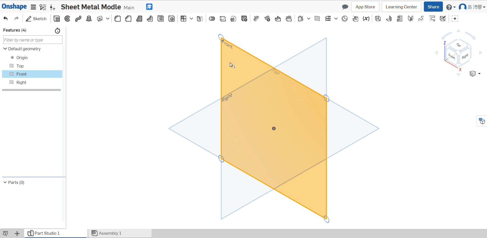
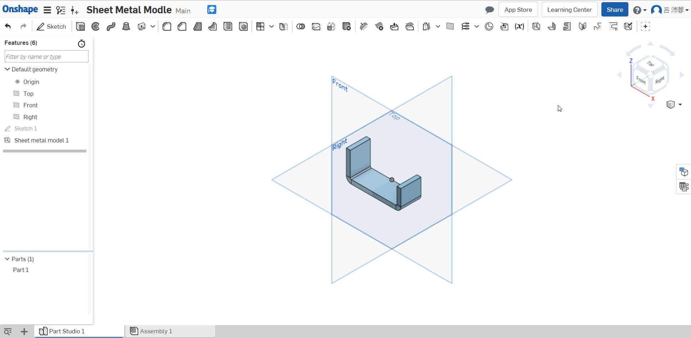

Selecting two sketches on one flange (or wall)
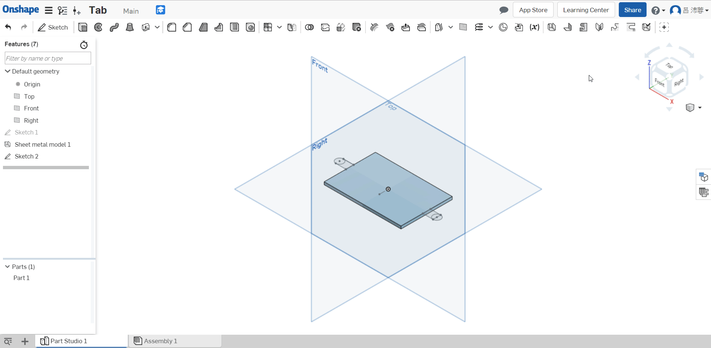
Selecting one sketch parallel to two walls (flanges)
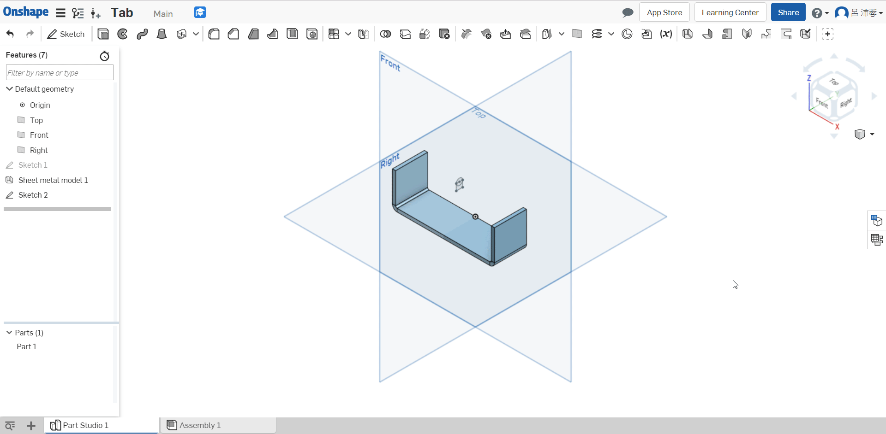
Creating a tab with a Subtraction scope

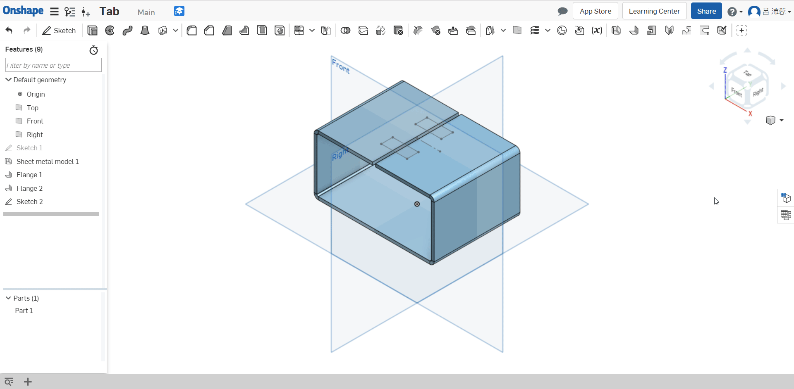

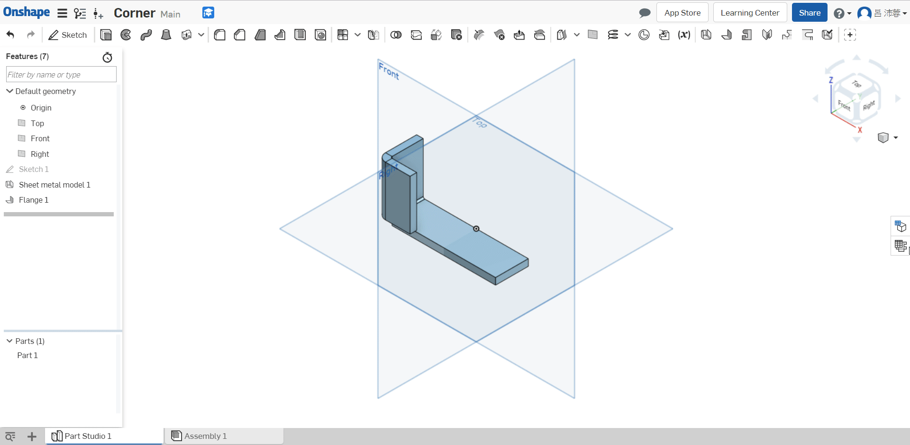
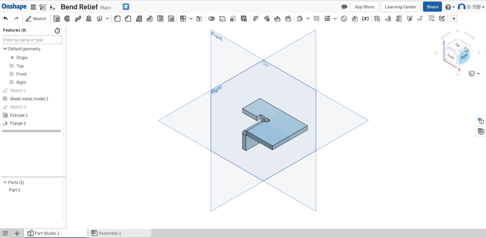
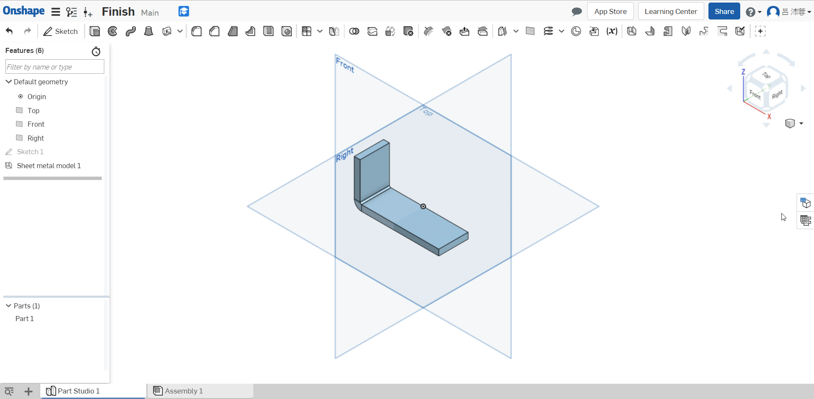
Assembled << Previous Next >> Independent Study
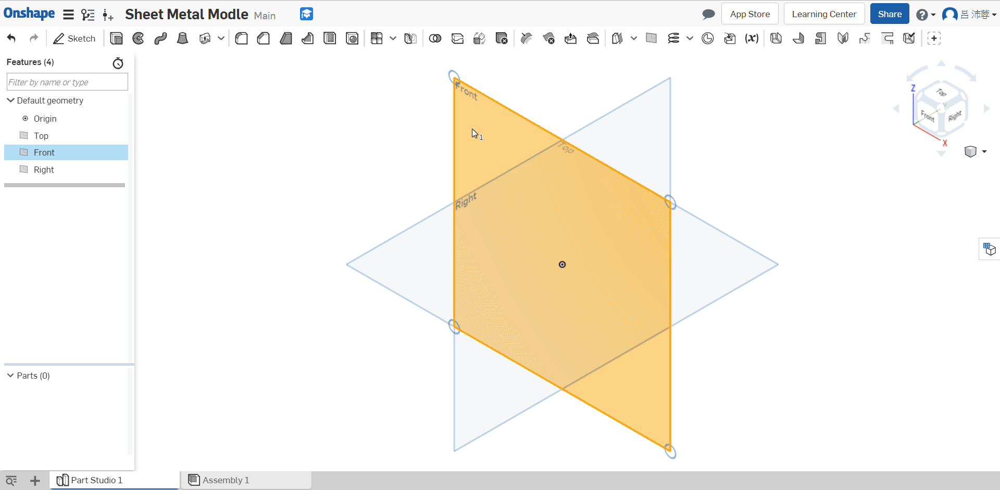
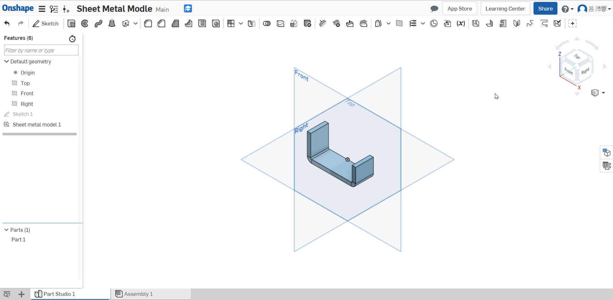
Selecting two sketches on one flange (or wall)
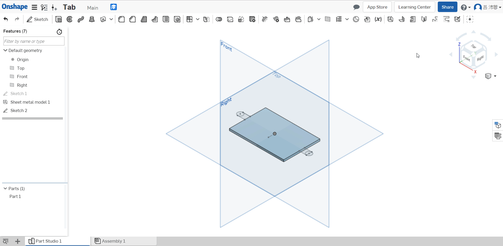
Selecting one sketch parallel to two walls (flanges)
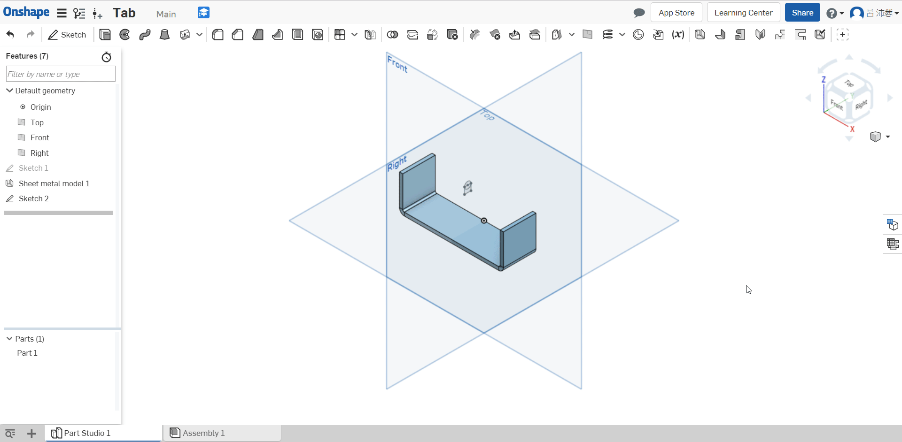
Creating a tab with a Subtraction scope
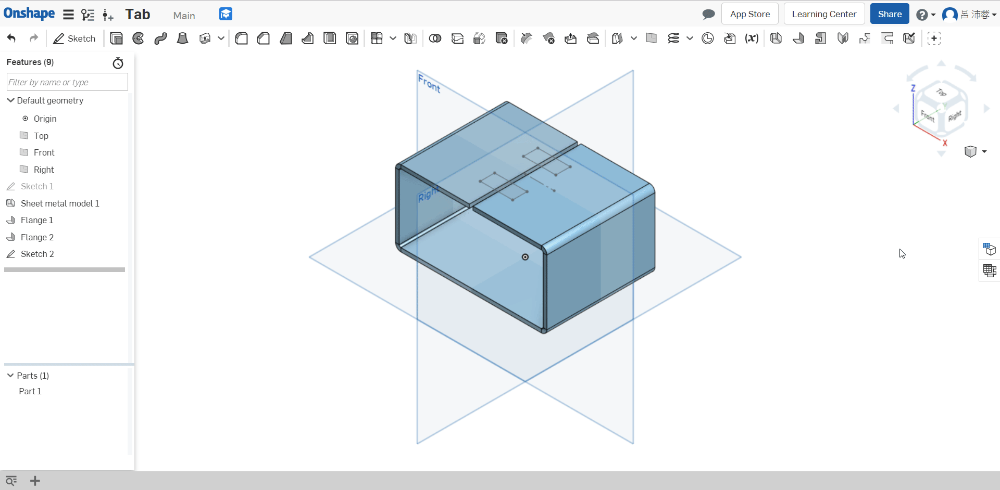
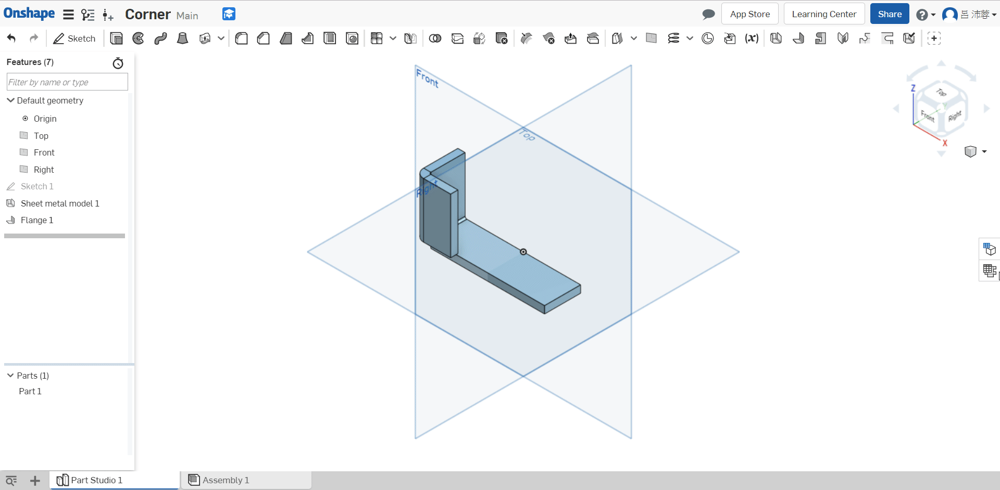
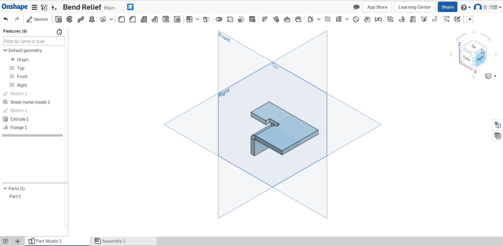
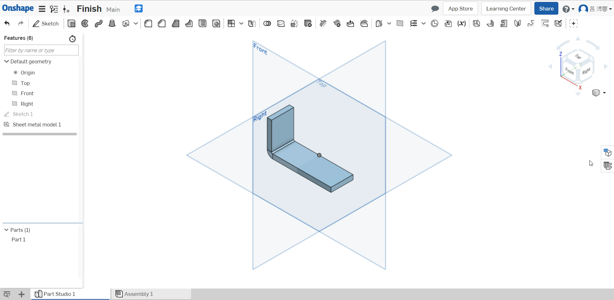